FIRST / FTC Robotics
FTC Robotics
Competition robot design, build, and testing with Team #18263 High Voltage. This section focuses on my engineering contributions: modeling most of the custom robot architecture in CAD, making packaging and mechanism decisions during the build, and contributing to the control code that connected sensing, shooter behavior, and field operation.
At a Glance
My work within a team-built competition robot
I used system-level CAD to connect mechanism choices to the physical robot, then contributed during fabrication, testing, and selected controls work. Awards listed below are team results.
My contribution
Subsystem CAD, intake and transfer geometry, turret and shooter packaging, custom plates, build decisions, and selected sensor and control logic.
Constraint
The intake, transfer path, turret, shooter, sensors, and drivetrain had to share a compact competition envelope while remaining serviceable.
Decision
I used the full CAD assembly to resolve ball-path alignment, mechanism interference, mounting access, and subsystem integration before and during fabrication.
Team result
The integrated robot combined automated aiming, sensor-triggered behavior, autonomous scoring work, and a field-tested mechanical system.
Next step
Continue field validation of subsystem timing, scoring consistency, and driver-facing behavior under match conditions.
My Contributions
My work centered on subsystem CAD, mechanical packaging, build decisions, and selected software/control logic across the robot's intake, transfer, turret, shooter, sensing, and field behavior.
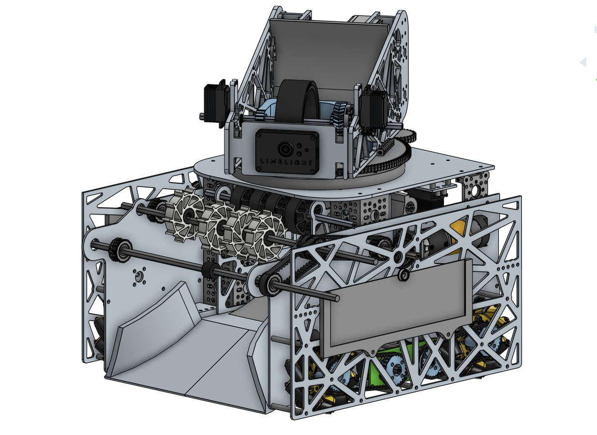
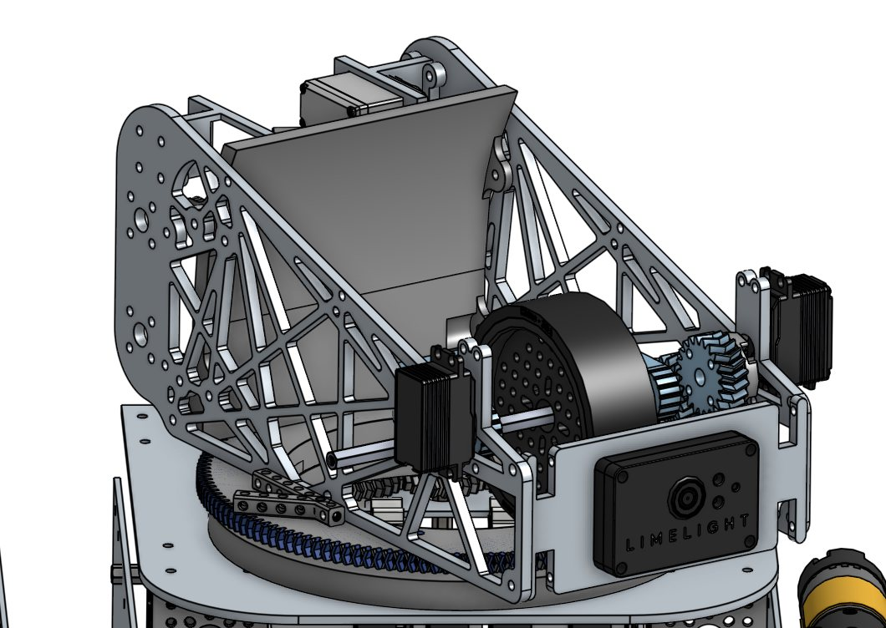
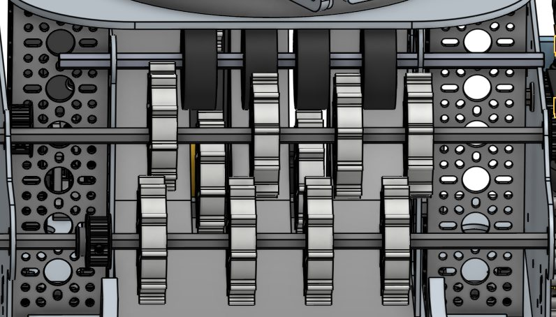
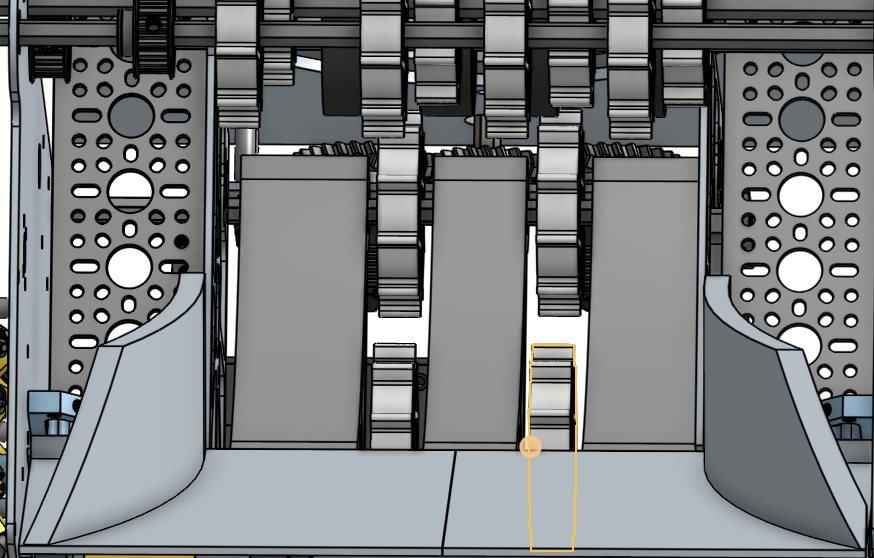
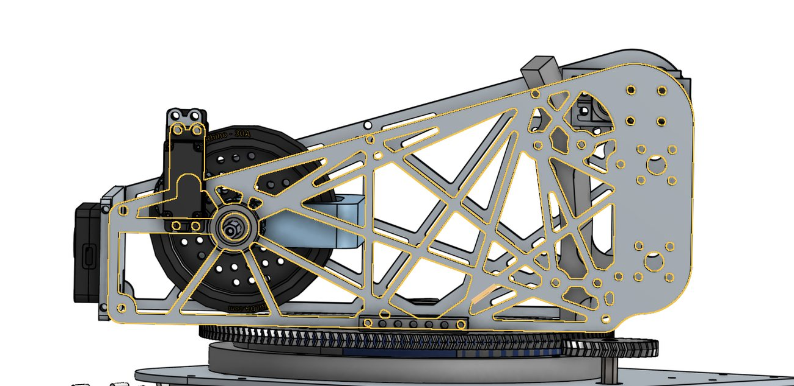
Awards & Recognition
Team awards
High Voltage has built on several seasons of competition experience, carrying forward engineering documentation, outreach, robot design, and mentorship across the team.
Read full build log 8 phases: strategy, mechanism iteration, CAD, controls contributions, and field testing
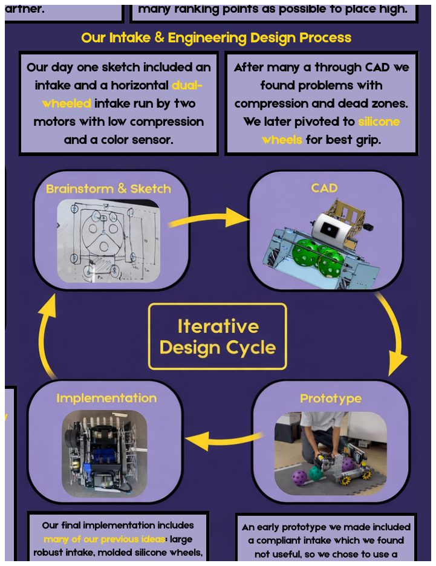
Phase 01 / Strategy & Design Process
Driver-centered architecture
The season began with a strategic decision to make the robot fast, consistent, and easy to control under defense. The design process centered on automated aiming, reliable autonomous scoring, and a mechanism layout that could cycle quickly without depending on perfect driver alignment.
- Started with a dual-wheel horizontal intake concept, then pivoted after CAD showed compression issues and dead zones.
- Used CAD, prototype testing, stress checks, and risk mitigation features like the stopper and hood to catch problems before competition.
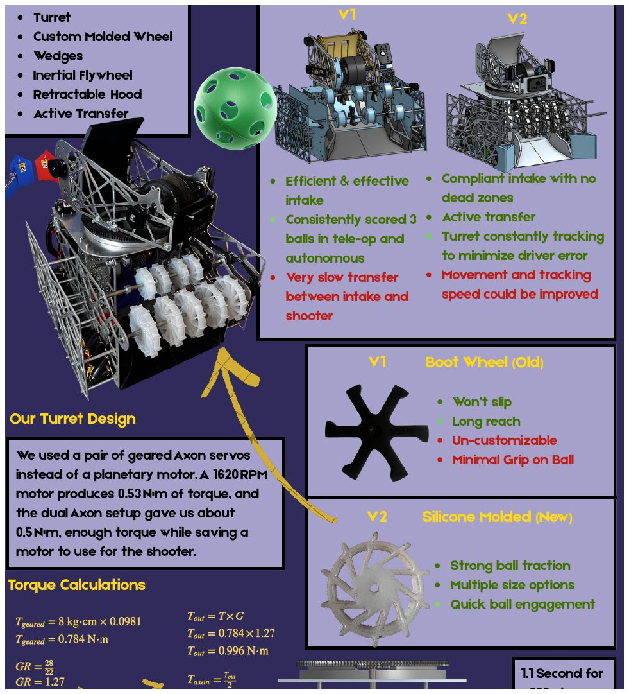
Phase 02 / S.P.A.R.K Evolutions
From V1 reliability to V2 automation
V1 proved the team could score consistently, but it exposed slow transfer between the intake and shooter. V2 added custom molded silicone wheels, wedges, an inertial flywheel, retractable hood, active transfer, and a turret that tracks the target to reduce driver error.
- Used dual geared Axon servos for the turret instead of dedicating a planetary motor.
- Reached roughly 0.5 N-m of turret torque with a 1.1 second 360-degree rotation target.
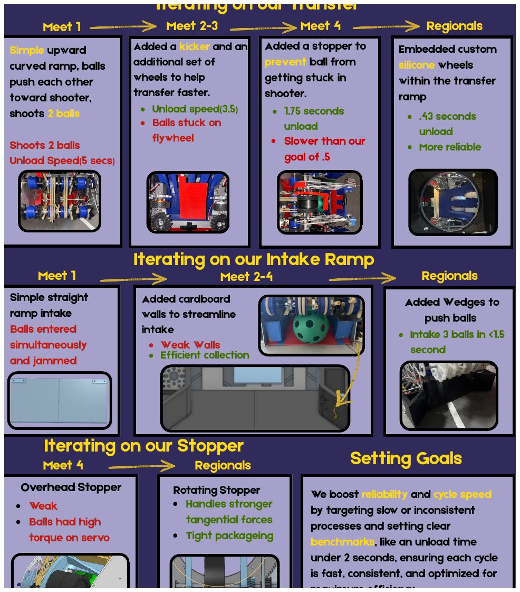
Phase 03 / Mechanism Iteration
Transfer, intake, and stopper refinement
The portfolio groups the most important iteration loop: transfer, intake ramp, and stopper design. The transfer moved from a simple upward curved ramp to a kicker, then to a stopper, and finally to embedded custom silicone wheels inside the transfer ramp. My work focused on translating these mechanism decisions into CAD and buildable packaging.
- Reduced unload time from about 5 seconds to 0.43 seconds while improving reliability.
- Changed the intake ramp from a jamming straight ramp to a wedge-guided system able to intake three balls in under 1.5 seconds.
- Replaced a weak overhead stopper with a rotating stopper that handled stronger tangential forces in a tight package.
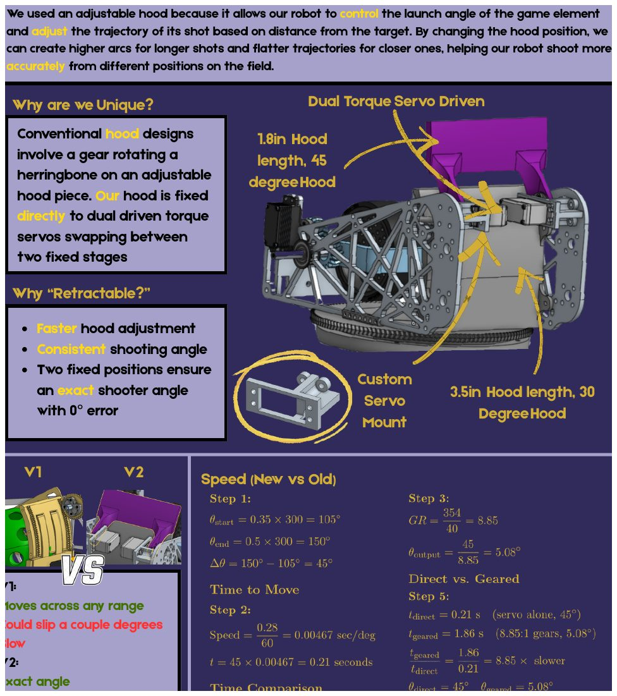
Phase 04 / Retractable Hood
Fast fixed-angle shot control
The retractable hood gave the shooter two repeatable launch angles instead of relying on a continuously adjustable mechanism that could slip. The hood was directly driven by dual torque servos and swapped between fixed geometric states.
- Used a 1.8 inch, 45 degree hood state and a 3.5 inch, 30 degree hood state.
- Traded full-range movement for exact angles, faster adjustment, and more consistent shooting.
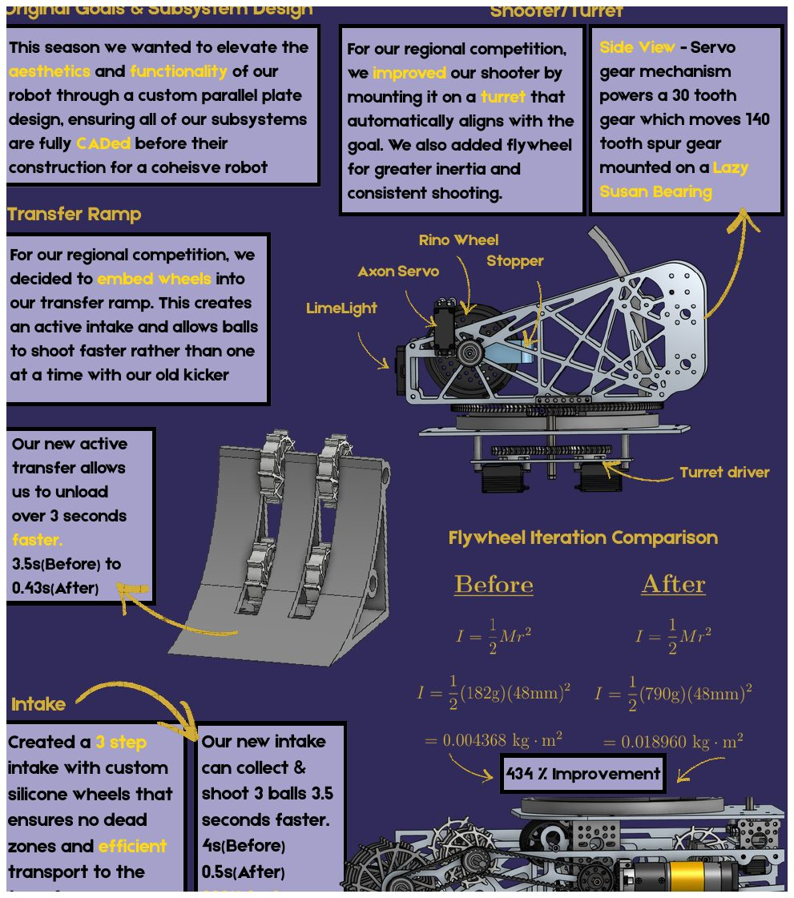
Phase 05 / Subsystem Design
Parallel plates and active transfer
I modeled most of the custom subsystem geometry in CAD and used a parallel-plate robot architecture so the drivetrain, shooter, turret, transfer ramp, intake, Limelight, stopper, and electronics could be integrated into one cohesive structure before manufacturing.
- Modeled custom plates, intake guides, transfer geometry, turret packaging, and shooter integration around real hardware constraints.
- Mounted the shooter on a turret driven through a servo gear mechanism and Lazy Susan bearing.
- Embedded wheels into the transfer ramp to turn a passive ramp into an active transfer system.
- Improved transfer unload from 3.5 seconds to 0.43 seconds and intake time from 4 seconds to 0.5 seconds.
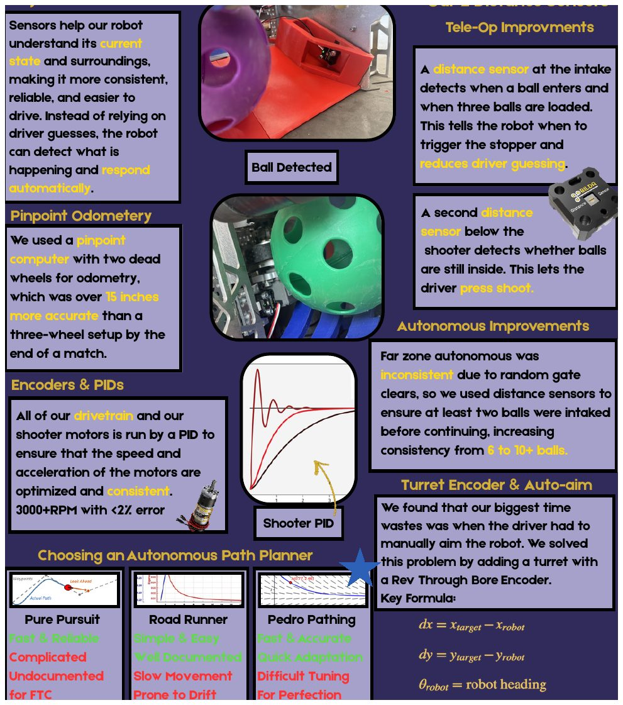
Phase 06 / Control Self-Awareness
Sensors, odometry, and auto-aim
I contributed to the coding and tuning work that helped the robot respond to its own state. Distance sensors detected when balls entered the intake and whether balls were still inside the shooter, while odometry and turret feedback improved autonomous and tele-op consistency.
- Used Pinpoint odometry with two dead wheels, ending matches over 15 inches more accurate than a three-wheel setup.
- Ran drivetrain and shooter motors with PID control, holding shooter speed above 3000 RPM with less than 2% error.
- Worked on sensor-triggered behavior and turret feedback so drivers had less manual timing and aiming burden.
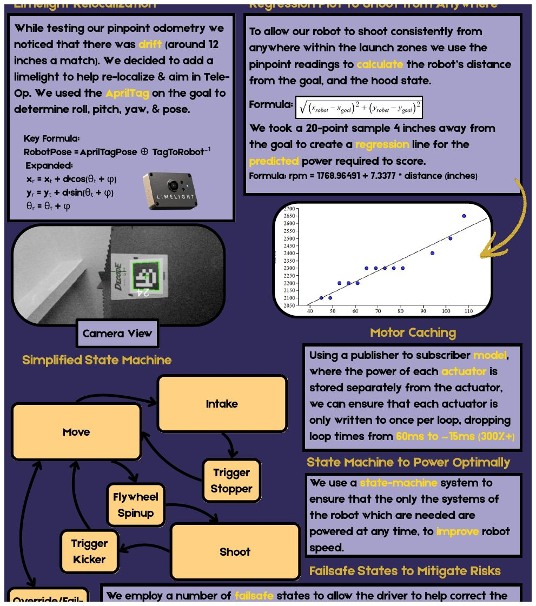
Phase 07 / External Awareness
Vision relocalization and software architecture
To correct odometry drift and shoot from different launch-zone positions, I contributed to the control-side work around Limelight AprilTag relocalization, shooter modeling, and state-based robot behavior. The software also used motor caching and a simplified state machine to make actuation faster and more reliable.
- I contributed to AprilTag pose work used to relocalize the robot from the goal target.
- The team used a 20-point distance sample to model shooter RPM as
1768.96491 + 7.3377 * distance. - The software reduced loop time from roughly 60 ms to 15 ms by writing actuator power once per loop.
Phase 08 / Field Test
Robot validation on field layout
Field testing gave the final feedback loop for subsystem timing, driver control, scoring reliability, and field interaction. It tied together intake, transfer, shooter, sensing, and software architecture under realistic constraints.
- Tested robot behavior in a field-like environment.
- Connected subsystem iteration to match-ready operation.